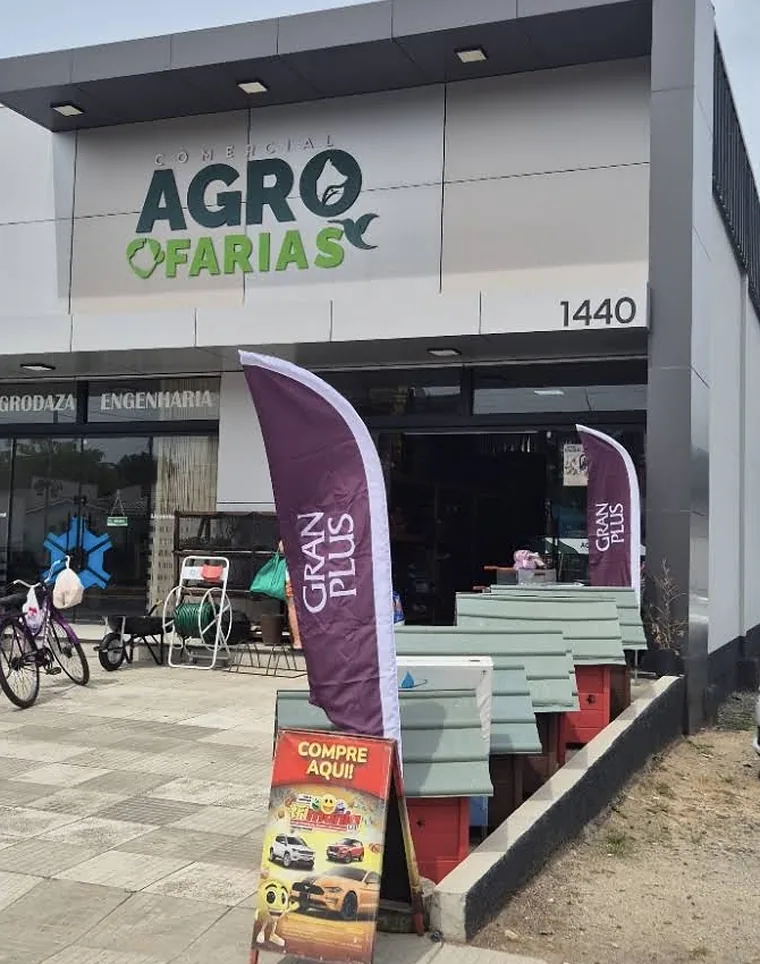
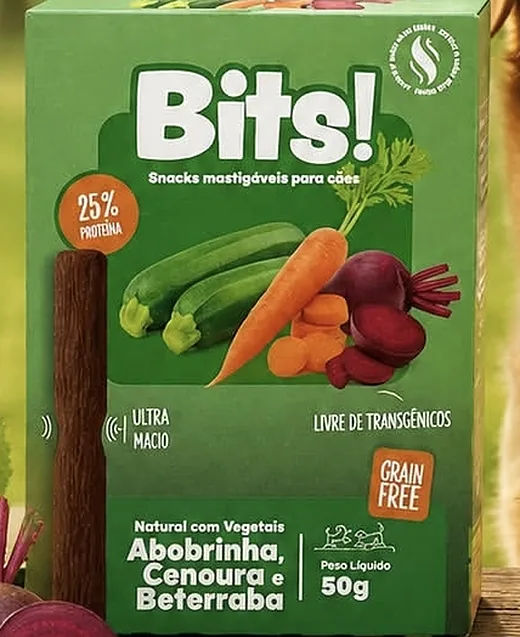
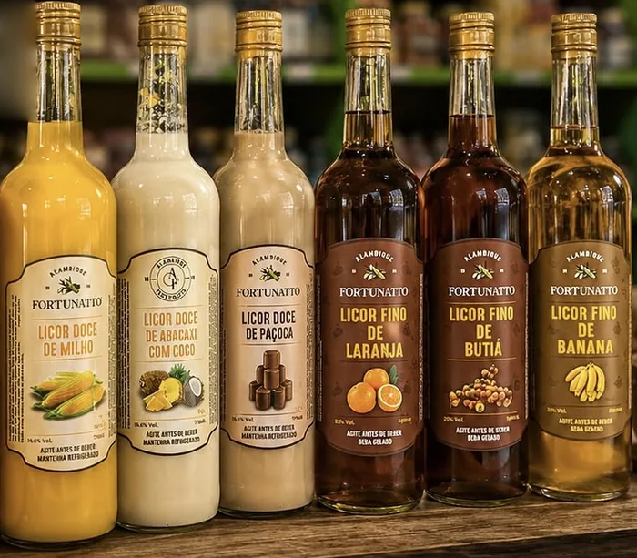
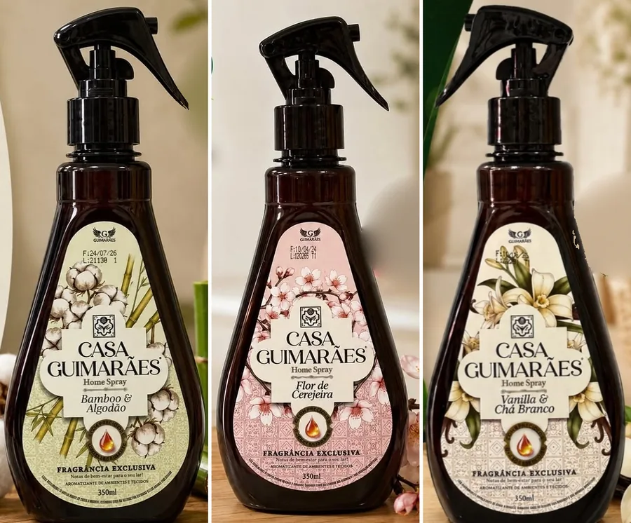
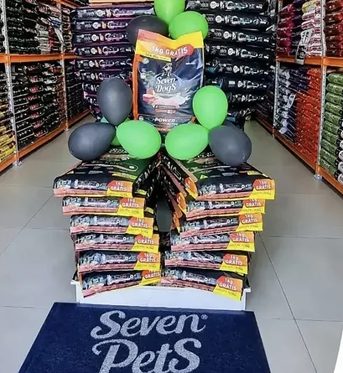
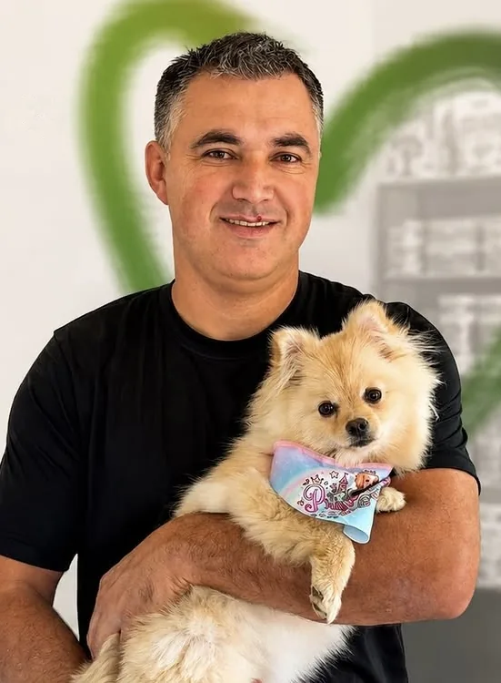

Agropecuária e pet · Maracajá/SC
Tudo para seu pet, tudo para sua família, tudo para sua vida.
Linha completa em rações, linha pet, medicamentos, ferramentas, artigos de pesca e produtos de piscina e de limpeza. Faça seu pedido sem sair de casa: estamos prontos para lhe atender.

Departamentos
Tudo o que você procura, num lugar só
Da ração do dia a dia ao produto da piscina. Toque em um departamento e pergunte direto pelo WhatsApp.
-
Rações
Linha completa de rações, com marcas como Green Paws, Seven Pets e Mandala.
Perguntar no WhatsApp sobre rações -
Linha pet
Petiscos como o snack Bits, casinhas de cachorro e o que seu cão ou gato precisa.
Perguntar no WhatsApp sobre a linha pet -
Medicamentos e vacinas
Medicamentos e comprimidos para o seu pet, e vacina da raiva para cães e gatos.
Perguntar no WhatsApp sobre medicamentos e vacinas -
Agropecuária
Produtos para quem planta e cria, com a tradição do campo.
Perguntar no WhatsApp sobre agropecuária -
Ferramentas
Ferramentas, carrinhos de mão e mangueiras para a casa, o jardim e o campo.
Perguntar no WhatsApp sobre ferramentas -
Jardinagem
Para cuidar do jardim, da horta e das plantas de casa.
Perguntar no WhatsApp sobre jardinagem -
Artigos de pesca
O que você precisa para preparar a próxima pescaria.
Perguntar no WhatsApp sobre artigos de pesca -
Piscina
Produtos para manter a água da piscina limpa e pronta para o verão.
Perguntar no WhatsApp sobre produtos de piscina -
Produtos de limpeza
Para deixar a casa limpa e cheirosa, do chão ao quintal.
Perguntar no WhatsApp sobre produtos de limpeza -
Utilidades
Havaianas, home spray Casa Guimarães, licores Fortunatto e muito mais.
Perguntar no WhatsApp sobre utilidades
Monte seu pedido
Faça seu pedido sem sair de casa
Anote o que você precisa, escolha se vai retirar na loja ou combinar a entrega e envie. O pedido chega pronto no WhatsApp da Agro Farias e a equipe confirma com você valores e disponibilidade.
- Liste os produtos Escreva do seu jeito, com marca e tamanho se quiser.
- Escolha como receber Retirar na loja ou combinar a entrega pelo WhatsApp.
- Toque em enviar O WhatsApp abre com a mensagem pronta.
Nada fica salvo no site: a lista vai direto para a conversa com a loja.
Chame a equipe no (48) 99694-9325, de segunda a sábado.
Destaques da loja
Direto das nossas prateleiras
Alguns produtos que já apareceram no nosso Instagram. Quer saber se tem? É só perguntar.
-

Linha pet
Snack Bits
Snack mastigável para cães, com 25% de proteína e abobrinha, cenoura e beterraba.
Perguntar no WhatsApp sobre o snack Bits -

Bebidas artesanais
Licores Alambique Fortunatto
Morango, milho, abacaxi com coco, paçoca, laranja, butiá e banana.
Venda proibida para menores de 18 anos.
Perguntar no WhatsApp sobre os licores Fortunatto -

Casa
Home spray Casa Guimarães
Cuidado e perfume para o seu lar: Bamboo e Algodão, Flor de Cerejeira e Vanilla e Chá Branco.
Perguntar no WhatsApp sobre o home spray -
Saúde pet
Vacina da raiva
Temos a vacina da raiva para cães e gatos. Procure nossa equipe e proteja quem está sempre ao seu lado.
Perguntar no WhatsApp sobre a vacina da raiva


A loja
Aqui tem tudo para quem cuida com amor
Na SC-446, na Vila Beatriz, a Comercial Agro Farias tem prateleiras cheias de ração e de tudo para a casa, o campo e o seu pet. E a loja também movimenta a comunidade de Maracajá:
-
Feira com amostras grátis
Teve feira com amostras grátis e sorteio de uma TV de 50" para quem comprou Green Paws, Seven Pets ou Mandala. O sorteio foi no dia 10/10 e já tem ganhador!
-
Troca de figurinhas da Copa
No sábado, 30/05, a loja recebeu a troca de figurinhas do álbum da Copa. Era só trazer as repetidas e vir trocar.
Siga a loja no Instagram para não perder os próximos eventos e novidades.
Seguir @comercialagro.fariasMarcas
Marcas que você encontra aqui
Algumas das marcas que já passaram pelas nossas prateleiras e pelo nosso Instagram.
- RaçõesGreen Paws
- RaçõesSeven Pets
- RaçõesMandala
- RaçõesGranPlus
- PetiscosBits
- LicoresFortunatto
- Home sprayCasa Guimarães
- SandáliasHavaianas
Horário e onde estamos
Venha visitar a loja
Comercial Agro FariasSC-446, Vila Beatriz, Maracajá/SC · CEP 88915-000Nota 5,0 no Google
| Dia | Manhã | Tarde |
|---|---|---|
| Segunda | 7h30 às 12h | 13h30 às 19h |
| Terça | 7h30 às 12h | 13h30 às 19h |
| Quarta | 7h30 às 12h | 13h30 às 19h |
| Quinta | 7h30 às 12h | 13h30 às 19h |
| Sexta | 7h30 às 12h | 13h30 às 19h |
| Sábado | 7h30 às 12h | Fechado |
| Domingo | Fechado | |
Em feriados o horário pode mudar. Na dúvida, chame no WhatsApp.